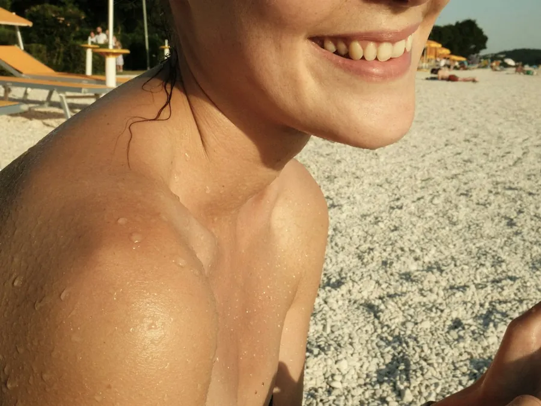

Aumento de senos
Aumento de senos:
las primeras semanas
Qué significa en la práctica "reposo relativo" la primera semana, y qué cambia entre la segunda y la cuarta.
Ya tienes la cirugía agendada y, más que el bisturí, lo que te quita el sueño son los días después: si puedes cargar a tu hijo al segundo día, si manejar al cuarto es mucha osadía, si "reposo relativo" significa cama todo el día o solo no hacer fuerza. En Medellín, el aumento de senos (mamoplastia de aumento) es una de las cirugías más cortas del catálogo, pero la recuperación tiene su propio orden, y conviene conocerlo antes de la fecha, no improvisarlo con la bolsa de hielo en la mano.
Semana 1: brasier posquirúrgico, reposo relativo y tu primer control
Sales de cirugía con brasier posquirúrgico puesto; se usa día y noche, no solo de día, porque sostiene el implante mientras el cuerpo arma el tejido nuevo alrededor. Esta primera semana es de reposo relativo: te mueves con calma, sin cargar peso ni hacer fuerza con los brazos, mientras baja la inflamación inicial. Eso no significa quedarte en cama todo el día. En este punto ya tienes tu primer control agendado con tu cirujano en Medellín, que es quien revisa cómo va la herida y te confirma el ritmo de los días siguientes.
Un poco de molestia e hinchazón en estos días es parte esperada, no una señal de alarma. Lo que sí hay que vigilar de cerca es que la inflamación no vaya en aumento en vez de bajar, o que el dolor empeore en lugar de ceder.
Semanas 2 a 4: la vuelta no es un interruptor
Pasada la primera semana, tu cirujano suele autorizar el regreso a actividades livianas, y de ahí en adelante todo es gradual. Si tu trabajo es de escritorio, una semana de incapacidad puede ser suficiente. Si implica levantar cajas, atender mesas o estar de pie varias horas, es razonable pedir unos días más; se lo dices a tu cirujano antes de la cirugía, no el día que sientes que no puedes seguir.
El ejercicio sigue la misma lógica, en etapas: primero caminar, después cardio suave, y solo con el visto bueno de tu cirujano en un control (no porque ya no te duela) entrenamiento de pecho o cargar peso con los brazos. Entrenar antes de tiempo no acelera nada; puede abrir la herida o mover el implante de su lugar.
Quién te ayuda en casa los primeros días
Como toda cirugía, el aumento de senos se hace con un adulto acompañante al menos la primera noche. No es solo quien te lleva y te recoge de la clínica: es quien te ayuda a vestirte mientras el brazo todavía molesta, a cargar lo que tú no debes cargar y a estar atento si algo cambia mientras duermes. Si tienes hijos pequeños en casa, resolver quién los sube, los baña o los carga esos primeros días es tan parte de la planeación como escoger el implante.
Señales que no se dejan pasar
Casi toda la recuperación de un aumento de senos transcurre sin sobresaltos, y eso también hay que decirlo con la misma claridad con que se dicen los riesgos. Pero hay señales que merecen una llamada al cirujano el mismo día: dolor que en vez de ceder empeora, o una hinchazón que no corresponde a la etapa en la que estás. La FDA recuerda, además, que una hinchazón o un dolor persistentes alrededor del implante, aunque son poco comunes, no son algo para esperar a que se resuelvan solos, sino para comentarlos con tu cirujano o tu médico tratante.
Por qué la forma de la primera semana no es la definitiva
En la primera semana los senos suelen verse más altos, firmes y un poco rígidos: es la inflamación, no el resultado. Con las semanas esa rigidez cede y el implante baja a su posición. El resultado que de verdad representa cómo te vas a ver se asienta entre los 3 y los 6 meses, cuando ya no queda inflamación residual. Juzgar el tamaño o la forma por una foto de la semana 1 lleva a comparaciones injustas con el resultado final, y a una ansiedad que no tiene de dónde salir.
Ningún calendario genérico reemplaza lo que te confirme tu cirujano en tus controles: el ritmo exacto cambia según tu cuerpo, tu técnica y cómo evoluciona tu herida. Si todavía estás decidiendo o quieres que revisen tu caso puntual, agenda tu valoración presencial. Y si antes de la cirugía quieres dejar lista la casa y los exámenes, cómo prepararte para una cirugía plástica cubre esa parte con más detalle.
Procedimientos de esta guía
Esta guía es informativa y no reemplaza una valoración médica. La indicación, los tiempos de recuperación y la fecha de regreso los define tu especialista en persona. Todo procedimiento tiene riesgos y los resultados varían de una persona a otra.
Preguntas frecuentes
Preguntas frecuentes
¿Cuántos días de incapacidad necesito para un aumento de senos?
Aproximadamente una semana para el procedimiento solo, sin mastopexia. Entre la segunda y la cuarta semana vuelves poco a poco a tu rutina. Tu cirujano ajusta el tiempo según tu caso y tu tipo de trabajo.
¿Puedo volver a mi trabajo de oficina en una semana?
Para trabajo de escritorio, suele alcanzar. Si tu trabajo exige cargar peso, estirar los brazos por encima de la cabeza o estar de pie muchas horas, coméntaselo a tu cirujano: puede pedirte más días antes de autorizar la vuelta.
¿Cuándo puedo hacer ejercicio otra vez?
De forma gradual entre la segunda y la cuarta semana, y siempre con autorización de tu cirujano, no porque ya no sientas dolor. Caminar se retoma antes que el entrenamiento de pecho o cargar peso con los brazos.
¿Es normal sentir molestia o algo de sangrado los primeros días?
Cierta molestia e hinchazón los primeros días son parte esperada del proceso, y se controla con lo que te indique tu cirujano. Lo que no es normal es que la hinchazón aumente en vez de bajar, o que el dolor empeore en lugar de ceder: ahí se contacta al cirujano de inmediato, no se espera al siguiente control.
¿Qué pasa si siento hinchazón o dolor que no se va con las semanas?
Avísale a tu cirujano. La FDA señala que una hinchazón o un dolor que persisten alrededor del implante, aunque sean poco frecuentes, deben revisarse; no es algo para esperar a que pase solo.
¿Cuándo se ve el resultado final?
Entre los 3 y los 6 meses, cuando el implante ya se asentó y bajó toda la inflamación. La forma de la primera semana, más alta y firme, no es la definitiva.
Blog
Sigue leyendo.

Melasma: por qué aparece y cómo se controlaNo es una mancha cualquiera, y por eso no se trata con la primera crema que recomiendan en redes.Leernoon Clinic
Tu valoración
Todo empieza con una conversación con nuestros especialistas.
Te respondemos en minutos por WhatsApp, en horario de atención. Resolvemos tus dudas y agendamos tu valoración presencial; por WhatsApp no diagnosticamos. Por qué noon